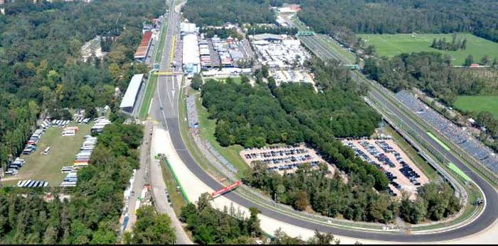
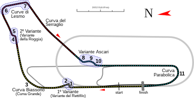

NAVEGUE
Home
Pilotos
Calendário/Tabela
Grand Prix
Construtoras
Últimas Notícias
GP da Itália
SOBRE
O Autodromo Nazionale di Monza é uma pista de corrida lendária localizada em Monza, Itália. É uma das pistas mais rápidas e históricas da Fórmula 1, conhecida por suas longas retas e curvas velozes. A pista tem uma extensão de 5,793 km e é composta por 11 curvas, sendo a mais famosa a "Curva Parabolica". A pista foi inaugurada em 1922 e tem sido um local importante para corridas de carros desde então. A corrida anual de Fórmula 1 em Monza é uma das mais emocionantes do calendário, com velocidades médias de mais de 250 km/h. A pista também é conhecida por sua atmosfera única e vibrante, com fãs apaixonados e entusiasmados criando uma atmosfera emocionante durante todo o fim de semana de corrida.
Circuitos Utilizados
Monza

INFORMAÇÕES DA CORRIDA

Localização
Monza, Itália
Voltas
53
Percurso
5.793 km
Total
308.238 km
Curvas
11
Pole
Lewis Hamilton
Anos Disputados
92
Última Disputa
2022
Maior vencedor
Michael Schumacher
Última Corrida - Pódio
Max Verstappen